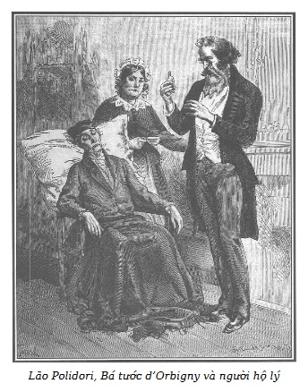

Nét mặt ngài Murph thật rạng rỡ.
Vừa xuống xe, ông trao cho một trong những người hầu của ông hoàng hai khẩu súng ngắn, cởi chiếc áo khoác dài mặc đi đường và không kịp thay quần áo, ông đi theo Rodolphe đang nóng lòng bước trước ông vào nhà.
– Tin tốt lành, thưa Điện hạ! Tin tốt lành! – Murph nói với Rodolphe khi chỉ còn hai người trong phòng. – Bọn khốn nạn đã bị vạch mặt, ông d’Orbigny được cứu thoát. Ngài đã phái tôi đi kịp thời, chỉ chậm một giờ, một tội ác mới nữa sẽ xảy ra.
– Còn bà d’Harville?
– Bà ấy rất vui vì quan hệ cha con đã trở lại đằm thắm hơn xưa, vô cùng hạnh phúc vì đã kịp thời theo lời khuyên của Điện hạ, cứu được ông bố khỏi cái chết gần như không thể tránh khỏi.
– Thế là Polidori…
– Lại thêm lần nữa hắn xứng đáng là đồng lõa của bà mẹ. Nhưng bà mẹ kế ấy mới quỷ quái làm sao, táo tợn khiếp, bình tĩnh ghê. Và Polidori ấy nữa. Chao ôi, thưa Điện hạ, đã có lúc Điện hạ muốn cám ơn tôi về cái mà Người cho là lòng trung thành của tôi với Điện hạ.
– Tôi vẫn luôn nói đến những biểu hiện tình bạn tốt đẹp của ông, ông bạn của tôi ạ!
– Thưa Điện hạ, chưa bao giờ, không bao giờ mà tình bạn đó lại được thử thách một cách nghiệt ngã như trong trường hợp vừa qua. – Nhà quý tộc Murph nói nửa nghiêm túc nửa như đùa bỡn.
– Vì sao lại thế?
– Sự trá hình của lão bán than, chuyện đi lại nhiều nơi trong thành phố, tất tần tật. Thưa Điện hạ, tuyệt đối chưa thấm chút nào với chuyến đi mà tôi vừa thực hiện với tên Polidori quỷ quái này.
– Ông nói gì vậy, Polidori à?
– Tôi đã dẫn hắn…
– Với ông…
– Với tôi. Ông nghĩ xem, sự chung đụng đến như thế! Tôi phải sát cánh bên con người mà tôi khinh bỉ, căm ghét nhất trên đời trong suốt mười hai tiếng đồng hồ, thà cùng phải đi lại với con rắn độc còn hơn, loài vật đáng ghét nhất đối với tôi.
– Thế Polidori hiện giờ ở đâu?
– Trong nhà ở phố Gái Góa, bị canh giữ chặt chẽ.
– Khi buộc phải đi theo ông, hắn không chống cự gì à?
– Tôi cho hắn chọn, hoặc là bị nhà chức trách Pháp bắt giữ ngay lập tức, hoặc là tù nhân của tôi ở phố Gái Góa. Hắn đã không chút do dự.
– Ông đã nghĩ đúng. Tốt nhất là nắm hắn trong tầm tay. Ông thật tuyệt vời, ông Murph của tôi ạ. Nhưng hãy kể về hành trình của ông. Tôi nóng lòng muốn biết mụ dì ghẻ và đồng bọn của mụ ta cuối cùng đã bị vạch mặt như thế nào.
– Không gì đơn giản hơn. Tôi chỉ cần nhất nhất làm theo lời chỉ dẫn của Điện hạ như trong thư là đã làm cho cái bọn người bỉ ổi sững sờ chết khiếp và bị đè bẹp ngay. Trong hoàn cảnh đó, thưa Điện hạ, như mọi lần ngài đã cứu vớt những người tốt và trừng trị kẻ xấu. Ngài quả là Thiên hựu* cao quý hóa thân!
Thiên hựu tinh là ngôi sao về việc giúp đỡ con người (Caruri).
– Ông Walter, ông Walter, hãy nhớ những lời khen của Nam tước de Graün. – Rodolphe vừa mỉm cười vừa nói.
– Vâng, thưa Điện hạ, được thôi, tôi xin bắt đầu vậy. Hay đúng hơn là mong Điện hạ đọc trước bức thư của bà d’Harville, Điện hạ sẽ biết được tất cả những gì đã diễn ra trước khi tôi đến, làm Polidori lúng túng.
– Một bức thư. Đưa ngay cho tôi.
– Do đã hẹn trước, lẽ ra cùng đi với bà d’Harville đến nhà cụ thân sinh thì tôi chờ ở quán giữ ngựa rất gần lâu đài, để đánh lạc hướng mà chờ bà d’Harville gọi.
Rodolphe bồn chồn và tha thiết, ân cần đọc những dòng sau:
“Thưa Điện hạ,
Sau tất cả những gì mà tôi phải đội ơn Điện hạ, nay tôi lại phải xin đội ơn Điện hạ về cả tính mệnh của cha tôi.
Xin để cho những sự việc bày tỏ. Những sự việc đó sẽ nói rõ hơn lòng biết ơn quý giá biết chừng nào của tôi đối với Điện hạ mà tôi vừa thu dồn trong trái tim tôi.
Hiểu hết tầm quan trọng của những lời chỉ bảo qua ngài Murph gặp tôi trên đường đi Normandie, khi ra khỏi Paris, tôi đã vội vã trở về lâu đài Aubiers.
Tôi không hiểu sao những người đón tiếp tôi đều có bộ mặt ảm đạm. Tôi không thấy một người hầu cũ nào trong số họ, không ai biết tôi cả. Tôi bắt buộc phải tự giới thiệu. Tôi được biết là đã vài ngày gần đây cha tôi đau rất nhiều, và bà mẹ kế của tôi vừa đưa một ông bác sĩ từ Paris về.
Không nghi ngờ gì nữa, đó là ông bác sĩ Polidori.
Tôi muốn được đến thăm cha tôi ngay. Tôi hỏi người hầu buồng già gắn bó lâu nay với cha tôi nay ở đâu. Tôi được trả lời là người ấy đã đi khỏi lâu đài ít lâu nay và những tin tức ấy được một người quản lý nói ra. Ông ta dẫn tôi về phòng rồi bảo là sẽ đi loan báo cho mẹ kế của tôi biết là tôi đã về.
Một ảo tưởng, một thành kiến chăng? Tôi cảm thấy dường như sự có mặt của tôi là quấy rầy những người hầu của cha tôi. Mọi thứ trong lâu đài đối với tôi đều buồn tẻ thê thảm. Trong trạng thái tinh thần của tôi lúc bấy giờ thì người ta hay tìm cách suy diễn từ những tình tiết nhỏ nhặt nhất. Tôi cảm thấy mọi nơi đều có hiện tượng lộn xộn chểnh mảng, dường như người ta thấy chăm sóc một nơi ở mà người ta sắp sửa rời khỏi là vô ích.
Nỗi buồn và sự lo lắng trong tôi mỗi lúc một tăng.
Sau khi đã đưa con gái và bà vú nuôi vào phòng, tôi đến thăm cha tôi, vừa đúng lúc mẹ kế tôi cũng vào.
Mặc dù giả dối, mặc dù thường ngày làm chủ được mình, bà ta gần như có vẻ hoảng hốt trước sự trở về đột ngột của tôi.
– Ông d’Orbigny không chờ đợi chuyến thăm của bà, thưa bà. – Bà ta nói với tôi. – Đang đau đớn như thế này thì một sự bất ngờ sẽ rất là tai hại đối với ông ấy. Tôi nghĩ thích hợp nhất là không nên cho ông ấy biết về sự có mặt của bà, ông ấy sẽ chẳng thể nào tự giải thích cho mình việc đó.
Tôi không để cho bà ta nói hết:
– Một tai họa lớn xảy ra với tôi, thưa bà, ông d’Harville đã chết thê thảm do vô ý. Sau sự việc đau lòng đó, tôi không thể ở Paris. Tôi phải về sống với cha tôi thời gian đầu những ngày tang tóc của tôi.
– Bà đã góa chồng ư? Đó là một điều hạnh phúc rồi còn gì! – Bà ta kêu lên như điên dại.
Biết rõ cuộc hôn nhân đau khổ mà bà ta đã sắp đặt để trả thù tôi, Điện hạ sẽ hiểu sự tàn nhẫn trong tiếng than của bà ta.
Tôi đã đáp lại:
– Chính bởi tôi biết là bà cũng muốn được hạnh phúc như tôi, thưa bà, nên tôi muốn quay về đây thăm cha tôi. – Tôi nói có thể phần nào là kém thận trọng.
– Điều đó là không thể được lúc này. – Bà ta nói với tôi, mặt tái đi. – Sự có mặt của bà sẽ làm ông ấy bị chấn động nguy hiểm.
– Do cha tôi ốm nặng, tại sao tôi không được báo tin nhỉ?
– Đó là theo ý muốn của ông d’Orbigny.
– Tôi không tin điều bà nói, thưa bà, và tôi sẽ tự mình khẳng định sự thực thế nào.
Tôi nói và quay bước ra cửa.
– Tôi nhắc lại là sự có mặt bất ngờ của bà sẽ làm cha bà đau đớn ghê gớm. – Bà ta kêu lên và đứng chắn ngang cửa không cho tôi ra. – Tôi không thể để bà gặp cha bà nếu tôi không khéo léo chuẩn bị trước trong tình trạng sức khỏe hiện nay của ông ấy.
Tôi lâm vào một tình thế lưỡng nan, thưa Điện hạ. Một cuộc gặp bất ngờ có thể gây nguy hiểm cho cha tôi! Nhưng thái độ của bà ta vốn thường ngày bình tĩnh, lạnh lùng và tự chủ thì lúc này lại có vẻ bối rối, làm tôi phải nghi ngờ sự săn sóc thành thực của bà ta đối với sức khỏe của cha tôi, người mà bà ta đã lấy vì gian tham. Hơn nữa, sự có mặt của lão bác sĩ Polidori, kẻ đã giết mẹ tôi, gợi cho tôi một nỗi lo sợ hãi hùng vì tôi nghi là tính mạng của cha tôi cũng bị đe dọa. Tôi quyết tâm cứu cha tôi, không còn e ngại sự có mặt của tôi dễ gây cho ông sự xúc động bất ngờ có hại.
– Tôi đến thăm cha tôi ngay bây giờ. – Tôi nói với bà ta và mặc bà ta nắm giữ tay, tôi cứ đi.
Như hoàn toàn mất trí, bà ta một lần nữa muốn dùng sức mạnh giữ không cho tôi ra khỏi phòng. Sự ngăn cản đó làm tôi tức giận. Tôi vùng khỏi tay bà ta. Biết rõ phòng của cha tôi, tôi chạy nhanh tới đó. Tôi đi thẳng vào phòng.
Ôi, thưa Điện hạ, suốt đời tôi không thể nào quên được cái quang cảnh diễn ra trước mắt tôi lúc đó.
Cha tôi gần như bất tỉnh, xanh xao, gầy yếu, nét mặt thể hiện sự đau đớn, đầu ngả vào một chiếc gối, nằm trên một chiếc ghế bành lớn.

.Bác sĩ Polidori đứng bên cha tôi phía góc lò sưởi, đang chuẩn bị nhỏ vào một cái chén vài giọt thuốc nước trong một lọ nhỏ bằng pha lê do người hộ lý đưa mà lão đang cầm trên tay.
Bộ râu màu hung càng làm bộ mặt lão thêm hung dữ. Tôi bất ngờ nhanh chóng chạy vào phòng, khiến lão phác một cử chỉ ngạc nhiên, đưa mắt ra hiệu với bà mẹ kế cũng vừa vội vã chạy theo tôi và thay vì cho cha tôi uống chén thuốc lão vừa pha chế, thì lão lại đột ngột đặt chén thuốc lên trên lò sưởi.
Do một bản năng mà cho đến nay tôi vẫn chưa phân tích được hướng dẫn, tôi lập tức vồ ngay cái chén ấy. Nhận thấy lão bác sĩ và bà mẹ kế sửng sốt và khiếp sợ, tôi rất mừng là đã hành động như vậy. Cha tôi sững sờ, dường như giận dữ khi thấy tôi, tôi đã dè chừng như thế. Lão Polidori trợn mắt lườm tôi dữ tợn. Mặc dù có mặt cha tôi và chị hộ lý, tôi vẫn sợ cái tên khốn nạn ấy thấy âm mưu bị bại lộ đến nơi, sẽ nhảy xổ vào tôi mà hành hung. Tôi cảm thấy cần có một chỗ dựa trong giờ phút quyết định này. Tôi bấm chuông. Một người hầu của cha tôi chạy đến. Tôi nhờ anh ta nói với người hầu phòng của tôi đi lấy cho tôi vài thứ đồ dùng ở quán giữ ngựa (tôi đã dặn trước người này), ngầm báo cho ngài Murph đến gặp tôi ngay, để tránh ánh mắt nghi ngờ của bà mẹ kế.
Quá bất ngờ, cha tôi và bà ta không kịp nói một lời nào, lúc người hầu ra đi. Tôi yên trí là chỉ trong một phút ngài Murph sẽ đến với tôi.
– Thế này là thế nào? – Cha tôi hỏi giọng yếu ớt nhưng nghiêm nghị và có vẻ bực dọc. – Cô về à, cô Clémence? Không chờ lệnh của tôi, vừa mới tới cô đã chiếm lấy lọ thuốc mà ngài bác sĩ chuẩn bị cho tôi uống. Hãy giải thích cho tôi sự điên rồ đó.
– Đi ra. – Bà mẹ kế ra lệnh cho chị hộ lý.
Chị này tuân lệnh.
– Ông hãy bình tĩnh. – Bà ta nói với cha tôi. – Ông biết đấy, một chút hồi hộp có thể nguy hại cho ông. Bởi vì con gái ông tới đây ngoài ý muốn của ông, và sự có mặt của cô ta làm ông khó chịu, hãy đưa tay cho tôi, tôi sẽ dìu ông sang phòng nhỏ. Ông bác sĩ của chúng ta sẽ nói cho bà d’Harville hiểu về sự khinh suất của bà ta, để khỏi phải nói nhiều hơn nữa đến cách xử sự của bà ta.
Và bà ta trao đổi với lão bác sĩ một cái nhìn đầy ý nghĩa.
Tôi thừa hiểu ý đồ của mẹ kế tôi. Bà ta muốn đưa cha tôi đi, để lại một mình tôi với lão bác sĩ. Trong hoàn cảnh cực đoan này hắn có thể dùng vũ lực chiếm lại lọ thuốc, một chứng cớ rành rành về âm mưu tội ác của hắn.
– Bà nói rất phải, – cha tôi nói với bà ta – vì nó tự ý đến bất chấp ý muốn của tôi nên cứ để mặc nó.
Ông đứng lên một cách khó khăn, đón lấy cánh tay của bà mẹ kế và đi vài bước vào phòng nhỏ. Vừa lúc đó Polidori tiến lại phía tôi, nhưng tôi đã tiến sát lại cha tôi và nói với ông:
– Con sẽ nói để cha rõ sự có mặt bất ngờ của con, và vì sao con lại xử sự như vừa rồi. Từ hôm qua con đã góa chồng. Từ hôm qua con đã biết rõ tính mạng của cha đang bị đe dọa.
Đang còng lưng đi những bước nặng nề, nghe tôi nói, ông dừng lại, đứng thẳng lên một cách mạnh mẽ, và nhìn tôi một cách chăm chú đầy ngạc nhiên.
– Con đã góa chồng à? Cuộc đời của cha đang bị đe dọa sao? Như thế nghĩa là thế nào?
– Ai dám đe dọa tính mạng cụ d’Orbigny trong những ngày này thưa bà? – Bà dì ghẻ tôi chất vấn tôi một cách táo tợn.
– Đúng, ai đe dọa? – Polidori phụ họa.
– Chính ông đấy, ông ạ! Cả bà nữa, thưa bà. – Tôi trả lời.
– Khủng khiếp chưa! – Bà dì ghẻ tôi kêu lên và tiến về phía tôi.
– Điều tôi vừa nói, tôi sẽ chứng minh thưa bà.
– Nhưng một sự buộc tội như thế thật là kinh khủng. – Cha tôi nói.
– Tôi sẽ đi ngay khỏi nhà này vì tôi đã bị những lời vu cáo tàn tệ. – Lão Polidori phẫn nộ rõ rệt, gần như một con người bị xúc phạm danh dự thực sự.
Cảm thấy sắp bị nguy, chắc chắn là lão định chuồn ngay.
Vừa đúng lúc lão mở cửa, lão chạm trán ngay với ngài Murph…”
Rodolphe ngừng đọc, giơ tay cho ông điền chủ quý tộc và nói:
– Tốt lắm! Thật kịp thời. Sự có mặt của ông như là một tiếng sét đánh vào tên khốn nạn đó.
– Thưa Điện hạ, đúng như thế, hắn trở nên tái mét, bước lùi lại hai bước, hoảng sợ nhìn tôi. – Murph nói. – Hắn gần như thất đảm. Gặp lại tôi ở cuối một góc xứ Normandie trong một phút như lúc này. Hắn tưởng đã qua một cơn ác mộng. Nhưng Điện hạ đọc tiếp đi, Điện hạ sẽ thấy cái bà Bá tước d’Orbigny ấy, đến lượt bà ta cũng như bị trời đánh, nhờ Điện hạ đã cho tôi biết bà d’Orbigny đã đến nhà tên lang băm Bradamanti Polidori ở trong cái nhà phố Temple… Vì dù sao cũng là Điện hạ hành động. Hay nói cho đúng hơn, tôi chỉ là công cụ thực hiện ý tưởng của ngài, do đó, tôi xin thề rằng, chưa bao giờ Điện hạ may mắn hơn, và chính đáng hơn để được thay thế cho Thượng đế có phần uể oải trong cái cơ hội này.
Rodolphe mỉm cười và tiếp tục đọc lá thư của d’Harville phu nhân:
“… Trông thấy ngài Murph, Polidori như chết đứng, bà mẹ kế tôi thì đi từ ngạc nhiên này đến ngạc nhiên khác.
Cha tôi xúc động trước cảnh đó, đuối sức vì bệnh tật bắt buộc phải ngồi im trên ghế bành, ngài Murph khóa trái hai vòng cửa mà ông mới bước qua, đứng chắn ngang một cửa khác thông sang phòng bên, làm cho Polidori không còn lối thoát. Ông nói với cha tôi một cách vô cùng kính cẩn:
– Thưa ngài Bá tước, xin được muôn lần tha thứ về sự đường đột rất khẩn cấp này, chỉ vì quyền lợi của Bá tước mà tôi buộc phải hành động thế này. Tôi là Walter Murph, cố vấn tin cẩn của đức Đại công tước trị vì ở Gerolstein, do đó tên khốn nạn này đã phải run như cầy sấy khi trông thấy tôi.
– Điều đó là đúng. – Lão bác sĩ lắp bắp, không còn hồn vía nào.
– Nhưng thưa ông, ông đến đây làm gì? Ông muốn gì?
– Thưa cha, ngài Murph đến để vạch mặt những tên khốn nạn định ám hại cha.
Thế rồi tôi đưa lọ thuốc cho ngài và nói thêm:
– Tôi đã kịp thời đoạt được lọ này vừa đúng lúc lão bác sĩ nhỏ vài giọt chất thuốc này vào cái cốc nước thuốc sắp đưa cho cha tôi uống. Thưa ngài, tôi xin trao tận tay ngài cái lọ này.
– Một dược sĩ ở thành phố kế bên sẽ phân tích trước ngài chất thuốc đựng trong lọ. Nếu nó chứa loại thuốc độc chậm và công hiệu thì không còn nghi ngờ gì về những hiểm nguy mà ngài đang hứng chịu, và lòng yêu thương của con gái ngài đã may mắn phát hiện, ngăn ngừa kịp thời.
Người cha đáng thương của tôi ngơ ngác nhìn một lượt hết bà vợ đến lão bác sĩ, đến tôi và ngài Murph, nét mặt ông lộ vẻ lo âu không thể tả được. Tôi nhận thấy qua nét mặt ông một sự đấu tranh mãnh liệt vò xé tâm can. Chắc chắn là ông ra sức chống lại những nỗi ngờ vực mỗi lúc một nhiều và dữ dội về tội gian ác của bà mẹ kế tôi. Ông gục đầu vào hai lòng bàn tay và kêu lên:
– Ôi, lạy Chúa tôi! Tất cả mọi chuyện đều khiếp đảm. Không thể như thế được! Có phải tôi đang mơ chăng?
– Không, không phải là một giấc mơ. – Bà mẹ kế kêu lên một cách táo tợn. – Không còn gì thật hơn là những lời vu khống chuẩn bị từ trước để hãm hại một người phụ nữ đáng thương chỉ có độc một tội là đã vì ông mà cống hiến cả đời mình. Lại đây, lại đây, ông bạn thân mến của tôi, không nên nấn ná một giây nào ở đây nữa. – Bà ta nói với cha tôi. – Có thể con gái của ông sẽ không quá vô lễ giữ ông lại đây khi ông không muốn.
– Đúng, đúng, chúng ta đi thôi! – Cha tôi nói. – Những chuyện đó đều không thể là sự thật. Tôi không muốn nghe thêm nữa, tôi không còn đủ lý trí để chịu đựng sự nghi ngờ rùng rợn tràn ngập trong tim tôi, đầu độc những ngày còn lại quá ít ỏi của đời tôi và không còn gì có thể an ủi tôi do một phát hiện ghê tởm đến thế.
Cha tôi hầu như quá đau đớn, quá tuyệt vọng nên bằng mọi giá, tôi muốn chấm dứt cái cảnh tượng quá đau khổ này đối với ông. Ngài Murph đoán được ý định của tôi và để làm cho mọi việc hoàn toàn sáng tỏ và đúng công lý, ông đáp lại cha tôi:
– Thưa ngài Bá tước, tôi xin thưa là ngài sẽ chịu đựng một nỗi buồn chắc chắn rất nặng nề khi biết được là người vợ mà ngài tưởng lâu nay gắn bó trung thành với ngài chỉ là một con quái vật giả dối, nhưng ngài sẽ thấy lại được niềm vui an ủi chân tình của cô con gái ngài, chưa bao giờ khiếm khuyết với ngài.
– Chuyện này đã vượt hết mọi giới hạn. – Bà mẹ kế nói như điên dại. – Và thưa ngài, ngài có quyền gì và bằng những chứng cứ gì mà dám nói những lời vu khống đáng sợ đó? Ngài nói rằng lọ này có chứa thuốc độc. Tôi phản đối, thưa ngài, và tôi sẽ phản đối cho đến khi có chứng cớ hiển nhiên. Và ngay cả khi bác sĩ Polidori vô ý hòa lẫn thuốc này với thuốc khác, thì đó có phải lý do để kết tội ông ấy đã cố ý đầu độc người bệnh? Ôi, không! Không, tôi không thể nói hết! Một ý nghĩ như thế cũng là một tội ác rồi, một lần nữa, thưa ngài, chứng cứ gì mà bà và ngài dám nói đến những điều vu khống trắng trợn đó? – Bà ta nói với một thái độ táo bạo lạ thường.
– Đúng, dựa vào chứng cứ gì? – Cha tôi kêu lên. – Điều giày vò mà họ bắt tôi chịu đựng phải có lúc kết thúc.
– Tôi không đến đây mà không có chứng cứ. – Ngài Murph nói. – Những chứng cứ một lát nữa Bá tước sẽ được biết qua những câu trả lời của tên khốn nạn này.
Sau đó ngài Murph nói bằng tiếng Đức với lão Polidori lúc này đã lấy được đôi chút tự tin nhưng sau đó lại mất ngay.”
– Ông nói cái gì với hắn ta? – Rodolphe ngừng đọc, hỏi.
– Vài lời có ý nghĩa, thưa Điện hạ, gần như thế này: “Mày đã trốn thoát sự kết án của tòa án Đại công quốc. Mày sống ở phố Temple núp dưới cái tên giả Bradamanti. Người ta thừa biết mày làm những nghề đáng ghê tởm gì. Mày đã đầu độc bà vợ ông Bá tước. Ba ngày trước đây bà d’Orbigny đến tìm mày, đưa mày về để đầu độc chồng bà ta. Đức ông Điện hạ đang ở Paris. Ngài có đủ chứng cứ mà tao đã đưa ra. Nếu mày thú nhận sự thực để cho con mụ này cứng lưỡi, mày có thể hy vọng không phải một sự tha thứ hoàn toàn, mà là một sự giảm nhẹ hình phạt mà mày xứng đáng phải chịu. Mày sẽ theo tao về Paris. Tao sẽ giấu mày ở một nơi cho đến khi ông hoàng có quyết định về mày. Chỉ có hai cách, một là hoàng thân trao mày cho chính phủ nước mày phán xét, hai là ngay lúc này, tao cho người đi tìm một quan tòa. Lọ thuốc độc này sẽ được giao cho ông ta. Người ta sẽ bắt mày ngay tại đây, người ta sẽ khám xét nơi ở của mày ở phố Temple. Mày hiểu là như thế sẽ nguy hiểm cho mày như thế nào, và tòa án Pháp sẽ làm việc. Hãy chọn đi!” Những lời phát hiện đó, những lời buộc tội đó, những lời đe dọa nối tiếp từng lời một dội vào tên hèn mạt đó. Hắn hiểu là tôi đã biết mọi chuyện. Hy vọng được giảm nhẹ tội, hắn không ngần ngại hy sinh kẻ đồng mưu, hắn đã trả lời tôi: “Xin cứ hỏi. Tôi sẽ nói hết sự thật có liên quan đến người đàn bà này.”
– Được, được, ông Murph đáng kính của tôi. Tôi hoàn toàn tin cậy ông.
– Trong lúc tôi nói chuyện với Polidori, nét mặt bà mẹ kế của bà d’Harville thay đổi một cách đáng sợ mặc dù bà ta không biết tiếng Đức. Bà ta hiểu được bởi sự sụp đổ mỗi lúc một tăng của kẻ đồng mưu và qua thái độ van xin của lão khi tôi trấn áp. Với nỗi lo âu sâu sắc, bà ta tìm cách nhìn Polidori, truyền cho lão một ít can đảm nhưng lão này tìm cách lẩn tránh cái nhìn đó.
– Thế còn ngài Bá tước?
– Sự xúc động của ông ấy là không thể tưởng tượng nổi, ông ấy nắm chặt lấy tay ghế bằng những ngón tay co rúm, mồ hôi toát đầy trán. Ông ấy thở một cách nặng nhọc, đôi mắt nảy lửa nhìn tôi không rời. Nỗi đau buồn của ông cũng nặng như của bà vợ kế. Đoạn cuối thư của bà d’Harville sẽ nói rõ kết cục của màn kịch nặng nề đó, thưa Điện hạ.